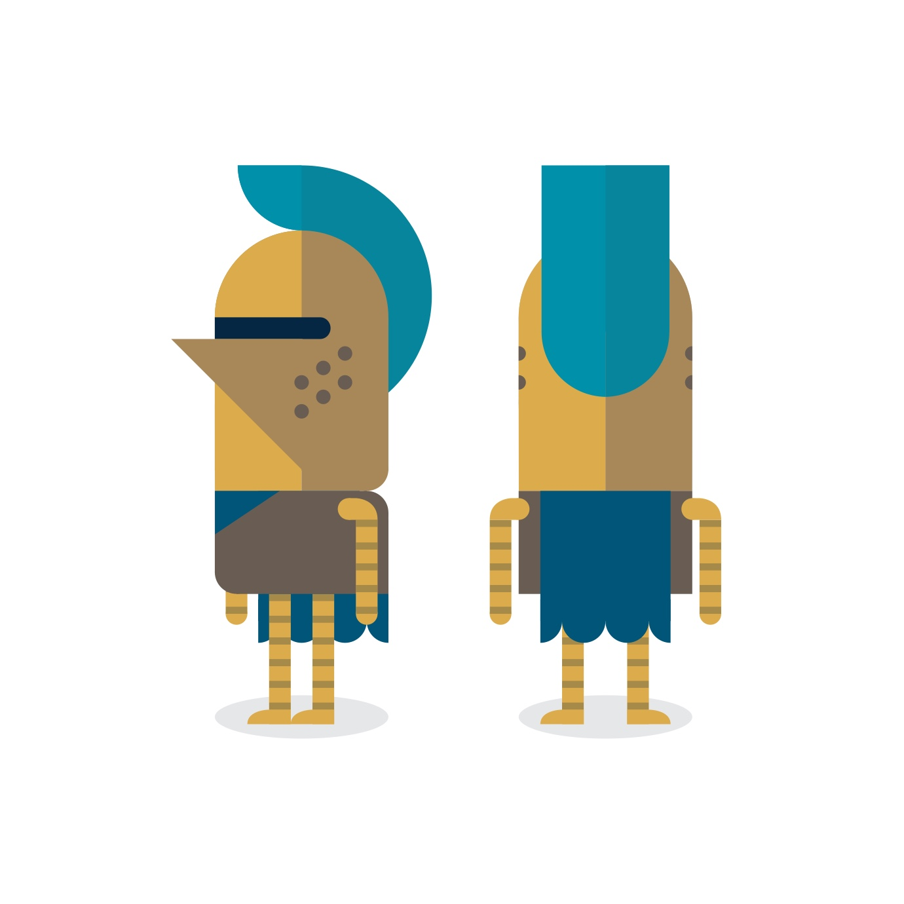
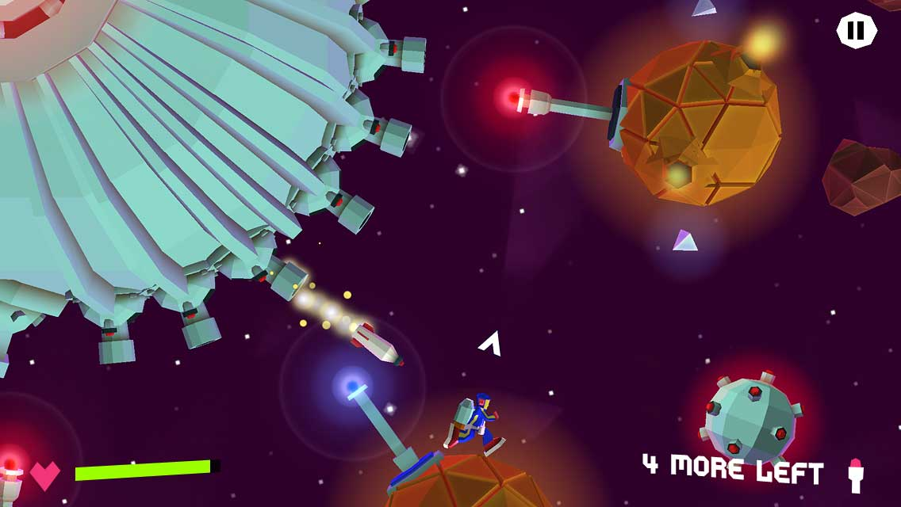
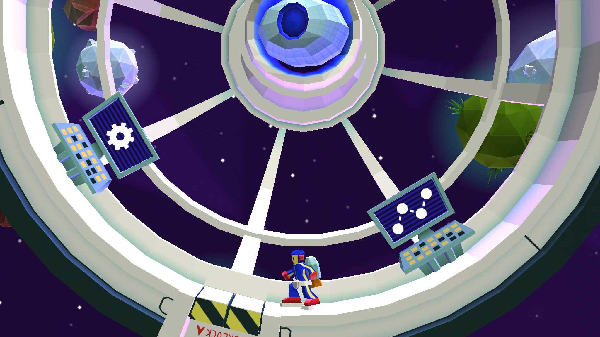
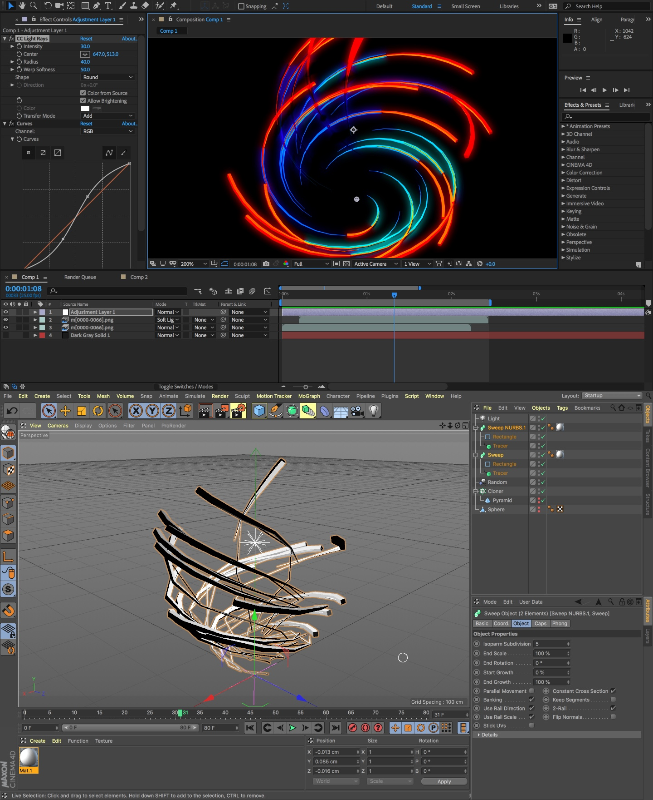
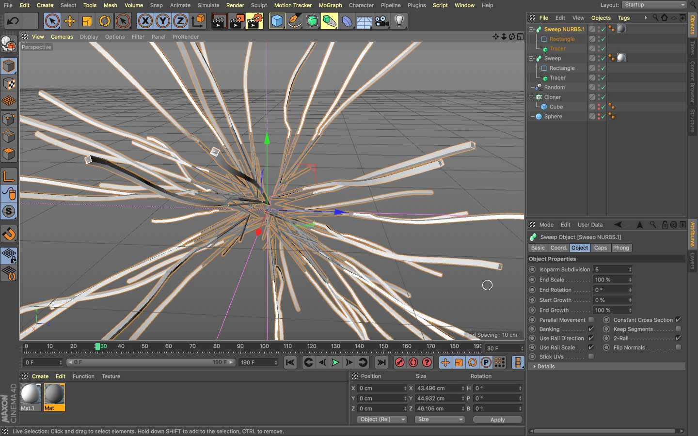
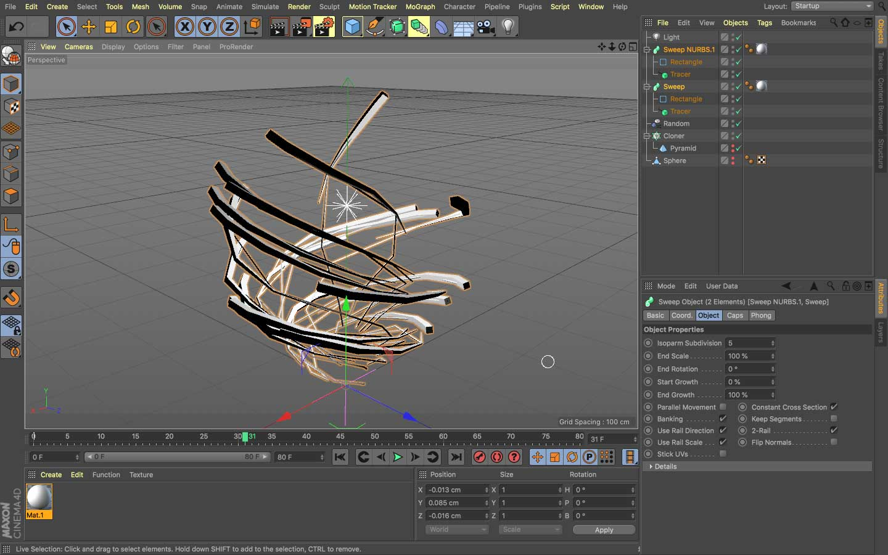

Animation - Interactivity - Games
A collection of personal projects and experiments that gave me inspiration to learn and opportunity to work on multiple visual-interactive disciplines.

A game prototype that I build to test an idea around a dragging game mechanic.
Simulating a game prototype in an AR environment.



A full game project that I worked on under a year as part of a 3 person team.
Testing out focus animations in WebVR with A-Frame and GreenSock animation library.
Experimenting with head-tracking and a Three.js particle system.


